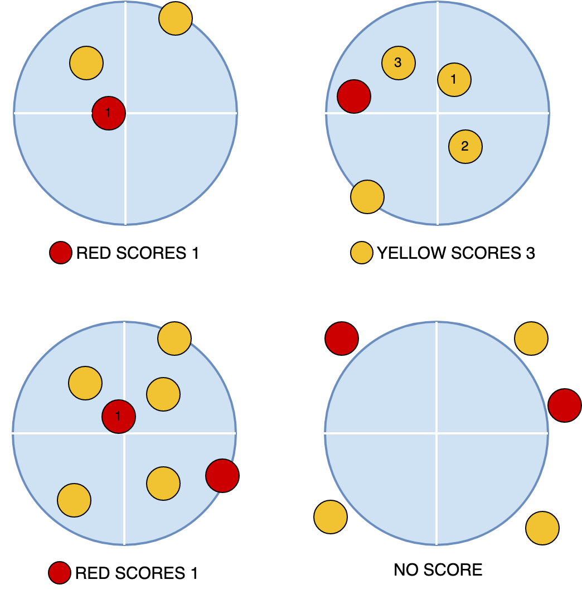

Let us denote the score of the red team and the yellow team as $$$s_{red}$$$
and $$$s_{yellow}$$$, respectively.
Test Set 1
For this test set, $$$\mathbf{M}$$$ = 0, i.e., there are no stones remaining on the curling
sheet for the yellow team. In this case:
$$$s_{red} = $$$ number of stones which are in the house.
$$$s_{yellow} = 0$$$.
For a house of radius $$$\mathbf{R_h}$$$ centered at $$$(0, 0)$$$, a stone centered at $$$(x,
y)$$$ with radius $$$\mathbf{R_s}$$$ is:
in the house iff: $$$\sqrt{x^2 + y^2} \le \mathbf{R_h} + \mathbf{R_s}$$$ (Equality is for
the case when the stone and the house are tangent to each other. Figure 1
shows such a case).
outside the house iff: $$$\sqrt{x^2 + y^2} \gt \mathbf{R_h} + \mathbf{R_s}$$$.
To count the stones in the house, we can iterate over the stones and count those
which satisfy condition 1, i.e., $$$x^2 + y^2 \le (\mathbf{R_h} + \mathbf{R_s})^2$$$.
In this test set, we can have non-zero number of stones remaining for both
teams. Figure 2 shows some examples of scoring in the game. To calculate the
score of a team, we can count the number of stones which contribute to the score
of a team. A stone contributes to the score of a team iff:
It is in the house.
It is closer to the center $$$(0, 0)$$$ than all of the stones of the
opponent team.

Figure 2: Examples of scoring in curling. Numbered circles are the only
scoring ones.
Here is a sample code in C++:
int dist(int x, int y) { return x * x + y * y; }
void solve() {
int s_red = 0;
for(int i = 1; i <= N; i++) {
bool is_scoring = dist(x[i], y[i]) <= (rs + rh) * (rs + rh); // Inside house.
for(int j = 1; j <= M; j++) {
is_scoring &= dist(x[i], y[i]) < dist(z[j], w[j]);
}
s_red += is_scoring;
}
int s_yellow = 0;
for(int i = 1; i <= M; i++) {
bool is_scoring = dist(z[i], w[i]) <= (rs + rh) * (rs + rh); // Inside house.
for(int j = 1; j <= N; j++) {
is_scoring &= dist(z[i], w[i]) < dist(x[j], y[j]);
}
s_yellow += is_scoring;
}
}
The overall time complexity of the above solution would be $$$O(\mathbf{N} \times
\mathbf{M})$$$.
Another solution
Note that the score of at least one team must be $$$0$$$. If a team does not
have any stones on the curling sheet, their score is $$$0$$$. If both teams
have at least one stone still in play, the opponent of the team that has the
stone closest to the center will have a $$$0$$$ score.
Case 1: $$$\mathbf{N} = 0 \text{ or } \mathbf{M} = 0$$$, i.e. there is at least one team
that does not have any stones remaining on the curling sheet.
In this case, the score of the team which does not have any stones left
is $$$0$$$ and the score of the other team is the number of stones in
the house.
Case 2: $$$\mathbf{N}\gt 0$$$ and $$$\mathbf{M} \gt 0$$$, i.e. each team has at least one
stone on the curling sheet.
Let $$$m_{red}$$$ be the least squared distance of a stone of the red
team, and $$$m_{yellow}$$$ be the least squared distance of a stone of
the yellow team. \begin{aligned} m_{red} &=\min _{1 \leq i \leq
\mathbf{N}}\left(\mathbf{X}_{\mathbf{i}}^2+\mathbf{Y}_{\mathbf{i}}^2\right)
\\ m_{yellow} &=\min _{1 \leq i \leq
\mathbf{M}}\left(\mathbf{Z}_{\mathbf{i}}^2+\mathbf{W}_{\mathbf{i}}^2\right)
\end{aligned} Note: $$$m_{red} \neq m_{yellow}$$$, as no two stones can
be equally close to the center $$$(0,0)$$$.
The score of teams:
\begin{align*} s_{red} = \begin{cases} \text {number of stones such
that } \mathbf{X_i}^2 + \mathbf{Y_i}^2 \lt m_{yellow} \text{ and }
\mathbf{X_i}^2 + \mathbf{Y_i}^2 \le (\mathbf{R_h} + \mathbf{R_s})^2, &
m_{red} < m_{yellow} \\ 0, & m_{red} > m_{yellow} \\ \end{cases}
\end{align*}
\begin{align*} s_{yellow} = \begin{cases} \text {number of stones such
that } \mathbf{Z_i}^2 + \mathbf{W_i}^2 \lt m_{red} \text{ and }
\mathbf{Z_i}^2 + \mathbf{W_i}^2 \le (\mathbf{R_h} + \mathbf{R_s})^2, &
m_{yellow} < m_{red} \\ 0, & m_{yellow} > m_{red} \\ \end{cases}
\end{align*}
The overall time complexity of the above solution would be $$$O(\mathbf{N} + \mathbf{M})$$$.